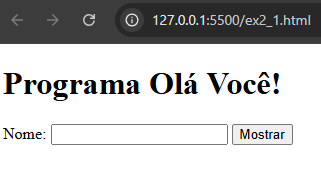
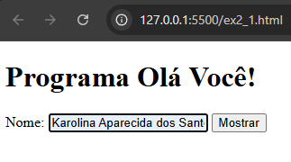
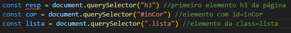
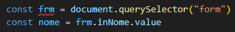
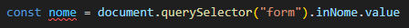
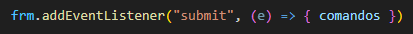

|  |  |
Para referenciar um elemento HTML identificado no documento, podemos utilizar os métodos querySelector() ou getElementById(). Esses métodos permitem referenciar qualquer elemento da página – como um campo de formulário, um parágrafo, um botão, uma imagem, entre outros. Com o método getElementById(), para que um elemento HTML seja referenciado, ele precisa conter um atributo id. Já o método querySelector() é mais amplo, e permite criar uma referência a um elemento HTML pela sua tag name, id ou classe. Observe os exemplos:
Uma desvantagem do querySelector() é que ele não é suportado por versões antigas dos navegadores (navegadores lançados antes de 2008 ou 2009).
Para resolver isso surgiram os chamados “transpiladores” de código. O Babel (babeljs.io) é um dos principais softwares desse segmento para javaScript.
Observe ainda, nos exemplos, que podemos armazenar a referência a um elemento em uma variável e depois obter a sua propriedade, como descrito a seguir:
Ou, então, utilizar um único comando, acessando diretamente a propriedade que queremos obter, como a seguir.
Se o programa trabalhar com o mesmo elemento mais de uma vez, é recomendado armazenar a localização dele em uma variável (exemplo de duas linhas). Caso contrário, você pode fazer uma referência direta a sua propriedade (exemplo de uma linha). Nos exemplos do livro, daremos preferência pelo uso dos comandos em duas linhas, a fim de padronizar o formato (facilitar o aprendizado). E os nomes de variáveis, em campos de formulários serão precedidos pelas letras in (input), e espaços de saída, quando identificados, serão precedidos por out (output).
Muito da programação JavaScript construída em páginas web é desenvolvida desta forma: elas são acionadas a partir da ocorrência de um evento. Quando o usuário executa uma ação, o programa responde ao evento do usuário com uma ou mais ações. O evento mais comum de ser programado para um formulário é o clique no botão submit. Mas há diversos outros, como modificar o conteúdo de um campo, clicar sobre um elemento da página, sair de um campo, carregar a página, entre outros. Mais detalhes sobre os eventos serão apresentados no capítulo 8.
Para criar um evento e definir o que será executado quando este evento ocorrer, deve-se utilizar uma palavra reservada para indicar qual evento a linguagem ficará na “escuta”. A palavra reservada pode ser, por exemplo, submit, change, click, blur ou load. Para adicionar um ouvinte de evento a um elemento da página, utiliza-se o método addEventListenert(), com o evento e o nome de uma função ou uma arrow function (função de seta) com os comandos a serem executados. Observe a sintaxe desse método:
As propriedades value e innerText serão utilizadas em praticamente todos os programas desenvolvidos neste e nos demais capítulos.
A propriedade value obtém ou altera o conteúdo de um campo de formulário HTML. Portanto, para obter o nome do usuário informado no Exemplo 2.1, é preciso utilizar essa propriedade.
Já a propriedade innerText serve para alterar ou obter o conteúdo de elementos de texto do documento identificados no código HTML. É possível, portanto, alterar o texto de qualquer parágrafo ou texto de cabeçalho em uma página web utilizando essa propriedade.
Há também a propriedade innerHTML, semelhante a innerText quanto aos elementos em que atua, porém renderiza os códigos HTML existentes no seu conteúdo. A Tabela 2.1 destaca a diferença entre as propriedades innerText, innerHTML e value.
Tabela 2.1 – Comparativo entre as propriedades innerText, InnerHTML e value
| innerText | Consulta ou altera o texto exibido por elementos HTML como parágrafos (p), cabeçalhos (h1, h2,...) ou containers (span, div). |
| innerHTML | Consulta ou altera o conteúdo de elementos HTML como parágrafos (p), cabeçalhos (h1, h2,...) ou containers (span, div). Códigos HTML presentes no conteúdo são renderizados pelo navegador. |
| value | Consulta ou altera o conteúdo de campos de formulário. |
A propriedade innerHTML pode apresetar algum risco relacionado à segurança na construção de páginas web em um tipo de ataque denominado XSS (Cross-Site Scripting). Para evitar esse problema, é necessário filtrar os dados de entrada de um site. Caso o conteúdo a ser exibido na página pelo programa não contenha dados informados pelo usuário, não há riscos em utilizar o innerHTML.
As propriedades textContent ou outerText são semelhantes ao innerText . Sinta-se à vontade, se preferir utilizá-las no lugar de innerText.
*Parei na página 49.